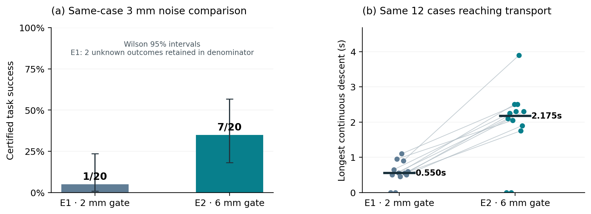

N03 success criteria / 新旧成功判据
Dated snapshot: 2026-10-21T22:25:34.457650+00:00
No historical success is promoted without evidence. The original verdict is retained. Historical policy snapshots cannot establish the new continuous 120Hz criterion: an absent final velocity/contact endpoint remains unknown. E1/E2 validation is in progress; no E2 learning result is claimed.
What changed
| Condition | Old independent native criterion | Frozen new criterion |
|---|---|---|
| Placement | 3D≤10mm, plus implicit XY≤8mm, Z≤6mm, upright cosine≥0.95 | 3D object-root position error≤10mm |
| Release | No positive instantaneous finger force; implicit opening>30mm and recent force≤0.01N | Both finger joints>30mm; both instantaneous force norms≤0.01N, a declared numerical contact proxy |
| Retreat | TCP height≥180mm above goal | Physical gripper–cup surface clearance≥50mm, proved by a conservative collision AABB lower bound minus10µm; insufficient bound means unknown |
| Settling | Linear speed≤20mm/s at20Hz, cached for6 native ticks | Linear speed≤20mm/s at all121 endpoints spanning120 native intervals /1s. Angular speed is diagnostic, not an added gate. |
| Lift / finite | Peak lift≥50mm; arm7 q/dq and other recorded native fields finite | No separate peak-lift gate. All9 joint positions/velocities and recorded native state finite; exact clock required. |
The thresholds were frozen before the new validation runs. The new recorder adds no action, force, reset or physics step. Original and new verdicts remain separate.
Frozen contract JSON · Full audit of all historical criterion generations
Historical evidence
49 closed sources / 2420 repeated executions. These are repeated methods, budgets and seeds on shared scenes; no pooled population confidence interval is computed. Partial snapshot checks are diagnostics, never a success numerator.
Source-level scores JSON · Every closed case: old verdict and new evidence CSV
| Source | Status | Denominator | Old successes | New: definite failures | New: unknown | Partial snapshots satisfy conditions |
|---|---|---|---|---|---|---|
| v1_M1_standard_28000_20261031 | CLOSED_RESCORED_ONCE | 50 | 0 | 50 | 0 | 0 |
| v1_M1_standard_28000_20261032 | CLOSED_RESCORED_ONCE | 50 | 0 | 50 | 0 | 0 |
| v1_M1_standard_28000_20261033 | CLOSED_RESCORED_ONCE | 50 | 0 | 50 | 0 | 0 |
| v1_M3_standard_28000_20261031 | CLOSED_RESCORED_ONCE | 50 | 0 | 50 | 0 | 0 |
| v1_M3_standard_28000_20261032 | CLOSED_RESCORED_ONCE | 50 | 0 | 50 | 0 | 0 |
| v1_M3_standard_28000_20261033 | CLOSED_RESCORED_ONCE | 50 | 0 | 50 | 0 | 0 |
| v1_M4_standard_28000_20261031 | CLOSED_RESCORED_ONCE | 50 | 1 | 49 | 1 | 1 |
| v1_M4_standard_28000_20261032 | CLOSED_RESCORED_ONCE | 50 | 1 | 49 | 1 | 1 |
| v1_M4_standard_28000_20261033 | CLOSED_RESCORED_ONCE | 50 | 0 | 50 | 0 | 0 |
| v1_M4_without_semantic_filter_28000_20261031 | CLOSED_RESCORED_ONCE | 50 | 0 | 50 | 0 | 0 |
| v1_M4_without_semantic_filter_28000_20261032 | CLOSED_RESCORED_ONCE | 50 | 0 | 50 | 0 | 0 |
| v1_M4_without_semantic_filter_28000_20261033 | CLOSED_RESCORED_ONCE | 50 | 0 | 50 | 0 | 0 |
| v1_M4_without_recovery_weight_28000_20261031 | CLOSED_RESCORED_ONCE | 50 | 0 | 50 | 0 | 0 |
| v1_M4_without_recovery_weight_28000_20261032 | CLOSED_RESCORED_ONCE | 50 | 0 | 50 | 0 | 0 |
| v1_M4_without_recovery_weight_28000_20261033 | CLOSED_RESCORED_ONCE | 50 | 0 | 50 | 0 | 0 |
| v1_M1_standard_42000_20261031 | CLOSED_RESCORED_ONCE | 50 | 0 | 50 | 0 | 0 |
| v1_M1_standard_42000_20261032 | CLOSED_RESCORED_ONCE | 50 | 0 | 50 | 0 | 0 |
| v1_M1_standard_42000_20261033 | CLOSED_RESCORED_ONCE | 50 | 0 | 49 | 1 | 0 |
| v1_M3_standard_42000_20261031 | CLOSED_RESCORED_ONCE | 50 | 0 | 50 | 0 | 0 |
| v1_M3_standard_42000_20261032 | CLOSED_RESCORED_ONCE | 50 | 0 | 50 | 0 | 0 |
| v1_M3_standard_42000_20261033 | CLOSED_RESCORED_ONCE | 50 | 0 | 49 | 1 | 1 |
| v1_M4_standard_42000_20261031 | CLOSED_RESCORED_ONCE | 50 | 0 | 50 | 0 | 0 |
| v1_M4_standard_42000_20261032 | CLOSED_RESCORED_ONCE | 50 | 0 | 50 | 0 | 0 |
| v1_M4_standard_42000_20261033 | CLOSED_RESCORED_ONCE | 50 | 0 | 50 | 0 | 0 |
| v1_M4_without_semantic_filter_42000_20261031 | CLOSED_RESCORED_ONCE | 50 | 0 | 50 | 0 | 0 |
| v1_M4_without_semantic_filter_42000_20261032 | CLOSED_RESCORED_ONCE | 50 | 0 | 50 | 0 | 0 |
| v1_M4_without_semantic_filter_42000_20261033 | CLOSED_RESCORED_ONCE | 50 | 0 | 50 | 0 | 0 |
| v1_M4_without_recovery_weight_42000_20261031 | CLOSED_RESCORED_ONCE | 50 | 0 | 50 | 0 | 0 |
| v1_M4_without_recovery_weight_42000_20261032 | CLOSED_RESCORED_ONCE | 50 | 0 | 50 | 0 | 0 |
| v1_M4_without_recovery_weight_42000_20261033 | CLOSED_RESCORED_ONCE | 50 | 0 | 49 | 1 | 1 |
| v1_M1_standard_56000_20261032 | CLOSED_RESCORED_ONCE | 50 | 0 | 50 | 0 | 0 |
| v1_M3_standard_56000_20261031 | CLOSED_RESCORED_ONCE | 50 | 0 | 50 | 0 | 0 |
| v1_M4_standard_56000_20261031 | CLOSED_RESCORED_ONCE | 50 | 1 | 48 | 2 | 2 |
| v1_M4_without_recovery_weight_56000_20261031 | CLOSED_RESCORED_ONCE | 50 | 0 | 49 | 1 | 1 |
| v1_M3_standard_56000_20261033 | CLOSED_RESCORED_ONCE | 50 | 0 | 49 | 1 | 1 |
| v1_M1_standard_56000_20261031 | CLOSED_RESCORED_ONCE | 50 | 0 | 49 | 1 | 1 |
| v1_M3_standard_56000_20261032 | CLOSED_RESCORED_ONCE | 50 | 0 | 50 | 0 | 0 |
| v1_M4_standard_56000_20261032 | CLOSED_RESCORED_ONCE | 50 | 0 | 50 | 0 | 0 |
| v1_M4_without_semantic_filter_56000_20261032 | CLOSED_RESCORED_ONCE | 50 | 0 | 50 | 0 | 0 |
| v1_M4_without_recovery_weight_56000_20261032 | CLOSED_RESCORED_ONCE | 50 | 0 | 50 | 0 | 0 |
| v1_M4_without_semantic_filter_56000_20261033 | CLOSED_RESCORED_ONCE | 50 | 0 | 50 | 0 | 0 |
| v1_M4_without_recovery_weight_56000_20261033 | CLOSED_RESCORED_ONCE | 50 | 0 | 49 | 1 | 1 |
| v1_M1_standard_56000_20261033 | WAIT_REAL_CLOSED | Not measured | Not measured | Not measured | Not measured | Not measured |
| v1_M4_standard_56000_20261033 | WAIT_SOURCE | Not measured | Not measured | Not measured | Not measured | Not measured |
| BC20_reference_20261031 | CLOSED_RESCORED_ONCE | 50 | 0 | 50 | 0 | 0 |
| BC20_reference_20261032 | CLOSED_RESCORED_ONCE | 50 | 0 | 50 | 0 | 0 |
| BC20_reference_20261033 | CLOSED_RESCORED_ONCE | 50 | 0 | 50 | 0 | 0 |
| M0_oracle | CLOSED_RESCORED_ONCE | 50 | 50 | 0 | 50 | 50 |
| v2_M3_standard_budget56000_seed20261031 | CLOSED_RESCORED_ONCE | 50 | 0 | 50 | 0 | 0 |
| v2_M4_standard_budget56000_seed20261031 | CLOSED_RESCORED_ONCE | 50 | 0 | 48 | 2 | 2 |
| C3_training_expert20 | CLOSED_RESCORED_ONCE | 20 | 20 | 0 | 20 | 20 |
The new strict120Hz historical success rate is not established, rather than zero. Unclosed sources have no invented scores. Prospective results will use the complete native endpoint records.
G12 — native follow-up and same-state diagnosis
E2 acceptance: Not established. Complete native results, incomplete experiments and CPU diagnostics remain separate. A closed nominal/takeover job alone is not E2 acceptance. V2+E2 quick probe: Not run; E2 acceptance pending; no unrun score is invented.
Native follow-up
| Experiment | Status | Physically complete | Planned | New PASS | New FAIL | New UNKNOWN | Stored old successes | Motion-qualified new successes | Motion cv/ca/av/aa |
|---|---|---|---|---|---|---|---|---|---|
| E2_nominal | Complete | 20 | 20 | 20 | 0 | 0 | 20 | 20 | 0/0/0/0 |
| C3_takeover_E1 | Complete | 50 | 50 | 50 | 0 | 0 | 50 | 46 | 0/0/0/6 |
| C3_takeover_E2 | Complete | 50 | 50 | 50 | 0 | 0 | 50 | 49 | 0/0/0/2 |
| E2_noise2 | 16 interrupted; 4 complete | 4 | 20 | Not measured | Not measured | Not measured | Not measured | Not measured | Not measured |
| E2_noise3 | Complete | 20 | 20 | 7 | 13 | 0 | 6 | 5 | 0/0/0/10 |
Full-experiment scores stay unknown until the complete planned bank is available. In the2mm resource-interrupted attempt, the16 incomplete physical outcomes are unmeasured, not physical FAIL verdicts. They remain conservative unsuccessful attempts in the planned20 denominator; conservative result: 3/20. The original interrupted attempt paid 128 queries; the remaining original4 cases are separate. The completed subset has 3 PASS, 1 FAIL and 0 UNKNOWN of 4 physical completions; its motion counters are [0, 0, 0, 2], not full20 counters. A complete2mm physical experiment is not claimed. No E2 experiments at4mm or6mm are requested here.
Motion counters count joint×native-step exceedances, in command velocity / command acceleration / actual velocity / actual acceleration order. Task PASS is not a claim of zero motion exceptions. Recorded visible takeover state agreement does not prove identical hidden PhysX state. An earlier remote C3 attempt remains unverified after SSH timeouts and is retained separately; these local paired50 results are not pooled with it.
In the paired3mm stage record, E1→E2 episode-ever counts are grasp 12→12, lift 12→12, transport 12→12, place 4→7, release 4→7. These descriptive stage counts do not establish E2 acceptance.
Among the same paired transported cases (12 E1 / 12 E2), median longest consecutive lower-phase dwell is 11.000→43.500 policy ticks; median lower→align transitions are 11.500→3.000. This is a phase-sequence description, not a new success condition.

Sealed CPU diagnosis
The frozen3D sphere contains5307 same-state labels. The separate XY-cylinder sensitivity contains10801 unique labels, reusing all5307 without querying again and adding5494. Total diagnostic cost is11131 calls, including330 paid labels lost in the original failed export and one authorized330-call repair. No diagnostic labels enter training; no simulation or parameter update was performed.
| Method | Region | Rows | Instances | Student mean Δz mm | E1 mean Δz mm | Bias z mm | Bias² mm² | Cov zz mm² | MSE z mm² | Aux correct |
|---|---|---|---|---|---|---|---|---|---|---|
| M3 | Main3D sphere | 626 | 2 | -0.100 | 4.553 | -4.653 | 21.653 | 207.153 | 228.806 | 4/626 |
| M3 | Exploratory XY cylinder | 3256 | 27 | 0.366 | 8.282 | -7.916 | 62.668 | 101.659 | 164.327 | 477/3256 |
| M3 | XY / actual E1 align7 | 186 | 22 | 2.579 | 0.021 | 2.558 | 6.541 | 9.248 | 15.789 | 19/186 |
| M3 | XY / actual E1 lower8 | 2 | 1 | -0.921 | -6.000 | 5.079 | 25.793 | 0.050 | 25.843 | 0/2 |
| M4 | Main3D sphere | 4681 | 17 | 1.764 | -2.479 | 4.243 | 18.000 | 293.465 | 311.465 | 98/4681 |
| M4 | Exploratory XY cylinder | 7545 | 22 | -0.095 | 1.753 | -1.848 | 3.415 | 289.872 | 293.287 | 331/7545 |
| M4 | XY / actual E1 align7 | 144 | 14 | -0.480 | 0.001 | -0.481 | 0.231 | 12.992 | 13.224 | 52/144 |
| M4 | XY / actual E1 lower8 | 1 | 1 | 0.533 | -6.000 | 6.533 | 42.680 | 0.000 | 42.680 | 0/1 |
Primary action error is the saved actual student command before postprocessing minus the clean same-state E1 command. Δz is a physical command per20Hz tick, not measured TCP velocity. Covariance uses population ddof0, so MSE z = bias z² + cov zz. Applied actions contain filter history; CPU model replay/auxiliary prediction does not replace saved actions.
Actual E1 align-phase7 has186 rows/22 instances for M3 and144/14 for M4. Auxiliary phase accuracy is19/186 and52/144; the most common wrong prediction is transport6 (138 and48 rows). Lower-phase8 has only2 and1 rows, each from1 instance. The main3D sphere has no actual E1 phase7/8 rows. These are dependent temporal observations: directed errors and low phase accuracy do not prove mode averaging. No independent-tick confidence interval is claimed.
Noise-scale interpretation
An approximate single-step3D error p95 of3.300mm corresponds to per-axis σ≈1.180mm only under a zero-mean isotropic Gaussian assumption (norm-p95 factor2.795). This is not a new experiment at that σ. Earlier completed E1 reference curve: 1mm: 20/20, 2mm: 18/20, 3mm: 1/20, 4mm: 0/20, 6mm: 0/20. That earlier curve is distinct from the incomplete current E2 noise2 experiment. Learned errors can be directional, correlated and phase-dependent; requested noise is changed by clipping and postprocessing. This comparison alone does not establish a mechanism.
Aggregate G12 evidence JSON. Original historical scores and their two scoring definitions above remain unchanged.